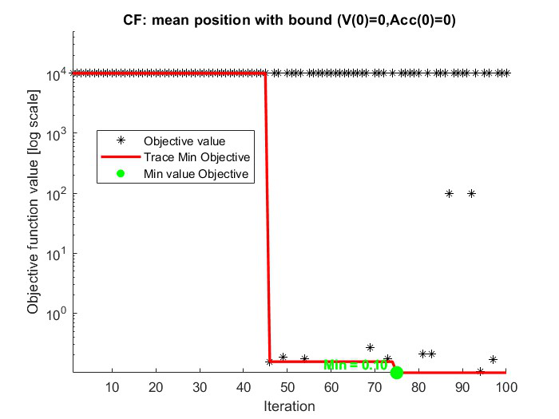
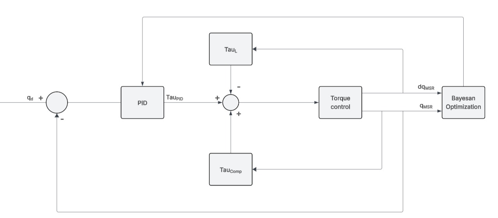
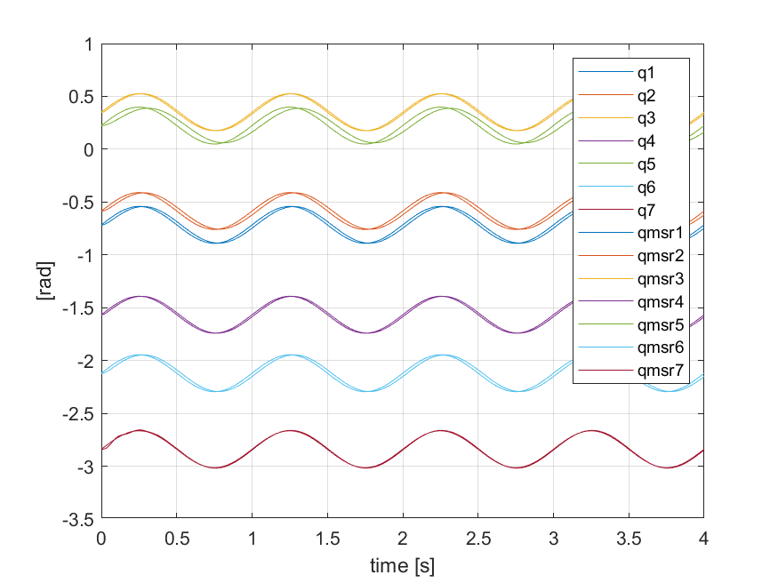
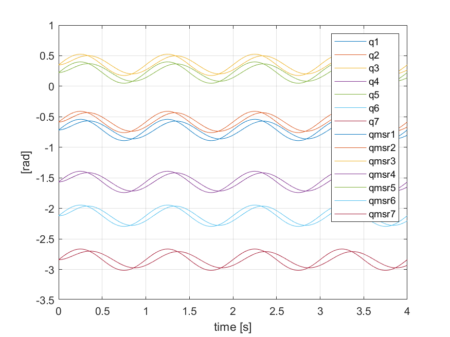
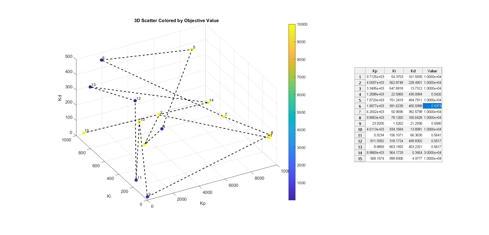

Engineering Challenge
Tune 21 proportional, integral and derivative gains so a seven-joint robot follows a prescribed trajectory accurately without exceeding manufacturer torque, velocity or acceleration limits.
Machine Learning for Mechanical Systems · Robot Control
Automatic tuning of 21 controller gains under actuator constraints
A MATLAB study of global and joint-wise Bayesian optimization for the seven independent PID controllers of a Franka Emika Panda robot, balancing trajectory accuracy with torque, velocity and acceleration limits.

Tune 21 proportional, integral and derivative gains so a seven-joint robot follows a prescribed trajectory accurately without exceeding manufacturer torque, velocity or acceleration limits.
Control Problem
Each of the robot's seven joints is controlled independently by proportional, integral and derivative gains. A single global optimization therefore explores a 21-dimensional parameter space while every candidate set must be evaluated through a full dynamic simulation.
The applied motor torque combines the PID action with model-based compensation for inertia, gravity and friction. Tracking error alone was not sufficient: solutions also had to respect joint-specific torque limits together with velocity and acceleration boundaries.

Optimization Workflow
1 · Explore
2 · Constrain
3 · Reformulate
4 · Decouple
Key Results
Without limits, Bayesian optimization reduced the objective below 1 but generated acceleration peaks that were unsuitable for real actuators. Adding the physical limits initially left the global optimizer above 100 even after 200 evaluations.
Reformulating the reference so velocity and acceleration start from zero removed the initial-state conflict. The constrained global search then reached a minimum of approximately 0.10, demonstrating both accurate tracking and compliance with the imposed limits.
Strategy Comparison

Global Optimization

Sequential Optimization
Bayesian Search
MATLAB's bayesopt function modeled the expensive objective with a Gaussian Process and selected new candidates using expected improvement. Ten seed points initiated exploration before the optimizer progressively focused on the most promising gain combinations.
The three-dimensional view shows the final single-joint candidates in Kp, Ki and Kd space, colored by objective value. It makes the feasible minima and the discontinuous penalty regions directly visible.

Methods & Tools